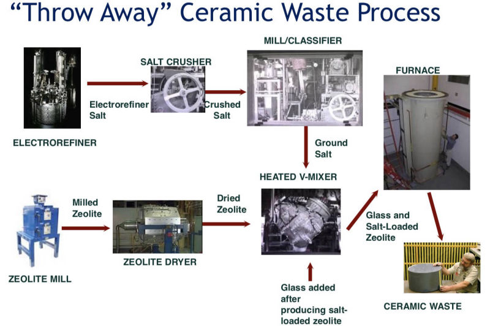
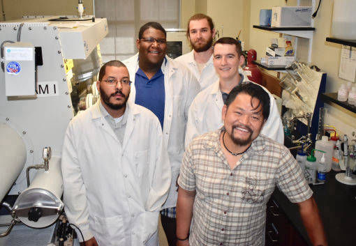
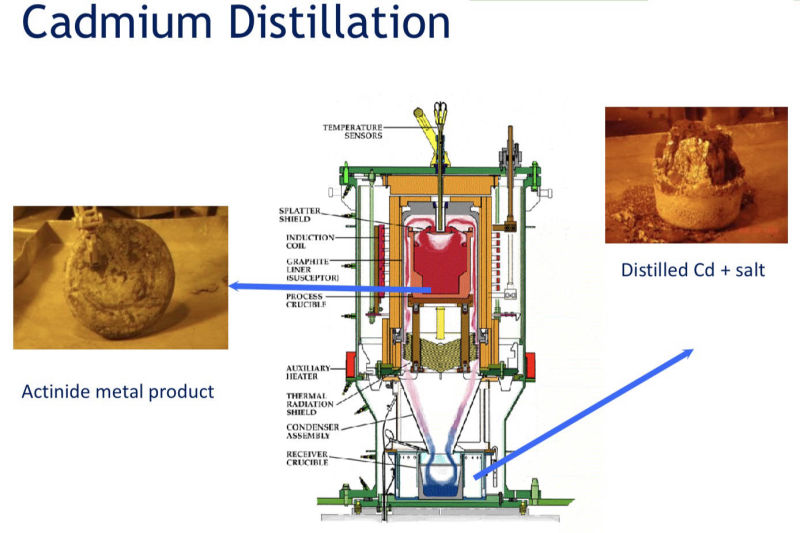
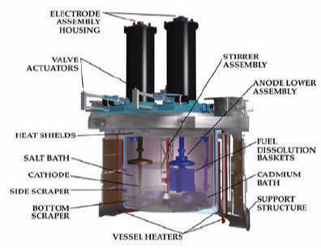
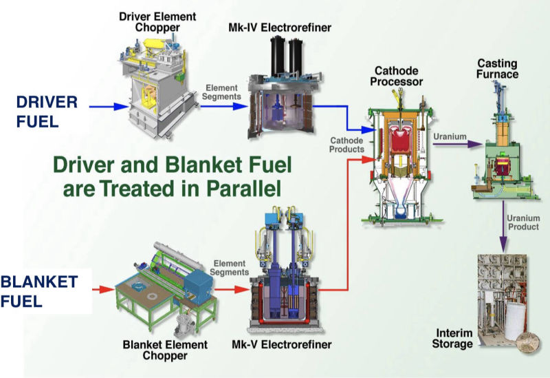
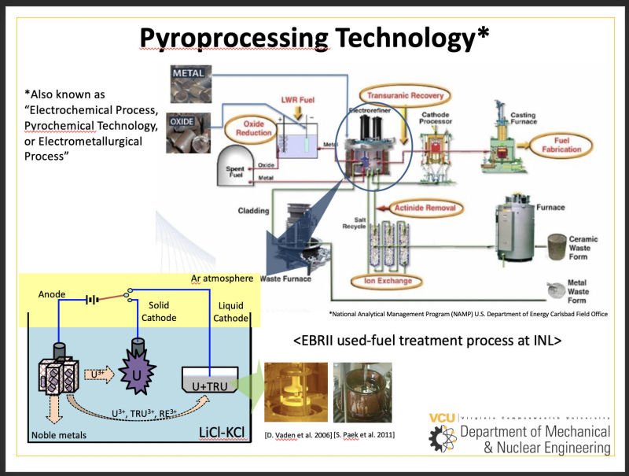
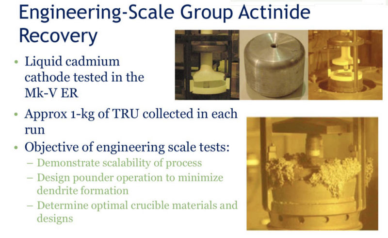
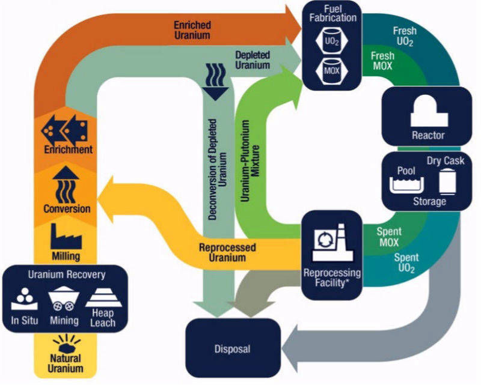
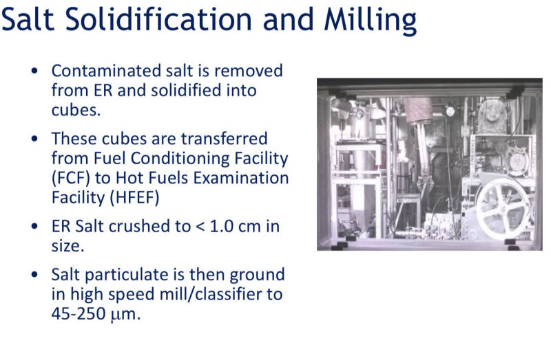
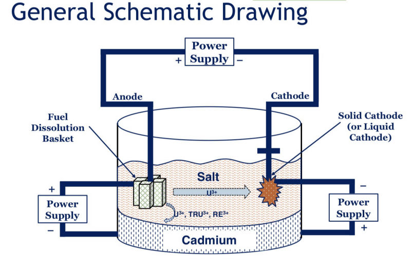

Ceramic Waste Process
Waste Salt Processing
Dr. Phongikaroon's Group
Cadmium Distillation
Mk. IV Electrorefiner
Blanket Fuel
Pyroprocessing Technology
Actinide Recovery
Nuclear Fuel Cycle
 Waste Disposal
Waste DisposalSalt Solidification
General Schematic Drawing